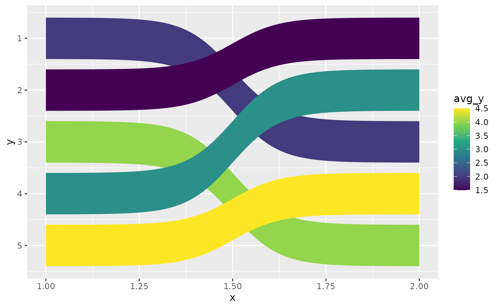
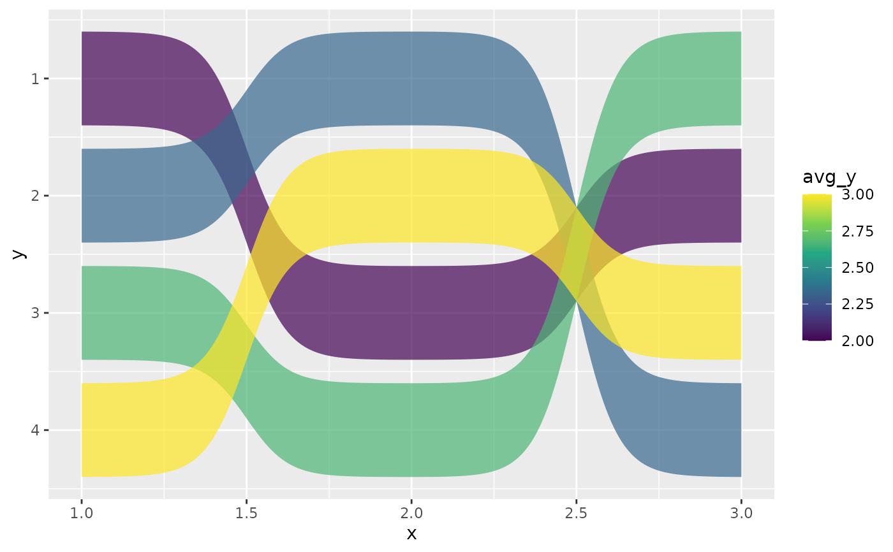
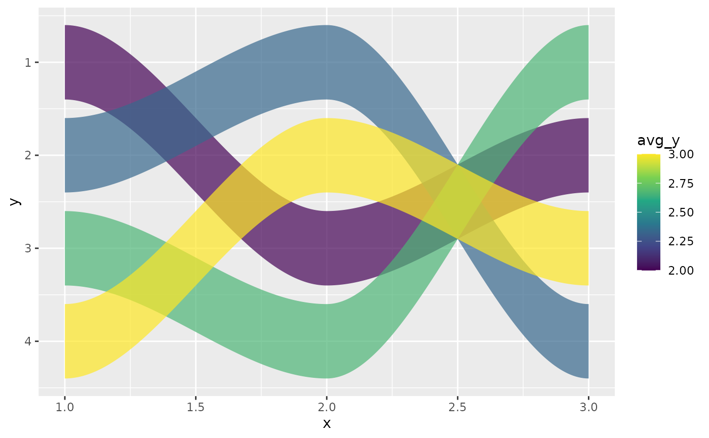
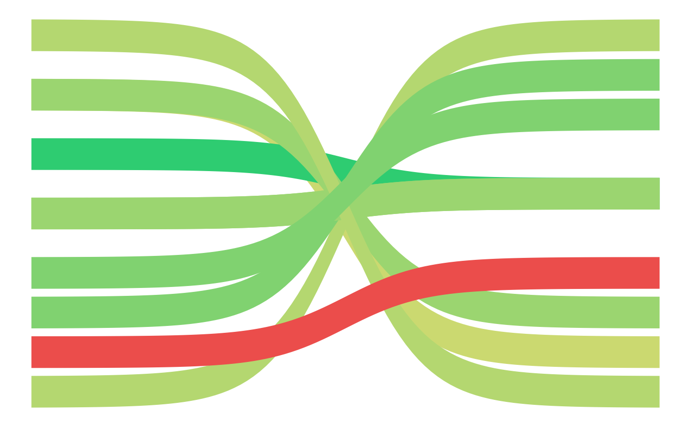

geom_bump_ribbon() renders filled ribbons that follow smooth curves
between discrete rank positions. It is the filled-area counterpart to
ggbump's geom_bump() (https://github.com/davidsjoberg/ggbump).
Usage
geom_bump_ribbon(
mapping = NULL,
data = NULL,
position = "identity",
...,
smooth = 8,
n = 100,
width = 0.8,
method = "sigmoid",
na.rm = FALSE,
show.legend = NA,
inherit.aes = TRUE
)Arguments
- mapping
Set of aesthetic mappings created by
aes(). If specified andinherit.aes = TRUE(the default), it is combined with the default mapping at the top level of the plot. You must supplymappingif there is no plot mapping.- data
The data to be displayed in this layer. There are three options:
If
NULL, the default, the data is inherited from the plot data as specified in the call toggplot().A
data.frame, or other object, will override the plot data. All objects will be fortified to produce a data frame. Seefortify()for which variables will be created.A
functionwill be called with a single argument, the plot data. The return value must be adata.frame, and will be used as the layer data. Afunctioncan be created from aformula(e.g.~ head(.x, 10)).- position
A position adjustment to use on the data for this layer. This can be used in various ways, including to prevent overplotting and improving the display. The
positionargument accepts the following:The result of calling a position function, such as
position_jitter(). This method allows for passing extra arguments to the position.A string naming the position adjustment. To give the position as a string, strip the function name of the
position_prefix. For example, to useposition_jitter(), give the position as"jitter".For more information and other ways to specify the position, see the layer position documentation.
- ...
Other arguments passed on to
layer()'sparamsargument. These arguments broadly fall into one of 4 categories below. Notably, further arguments to thepositionargument, or aesthetics that are required can not be passed through.... Unknown arguments that are not part of the 4 categories below are ignored.Static aesthetics that are not mapped to a scale, but are at a fixed value and apply to the layer as a whole. For example,
colour = "red"orlinewidth = 3. The geom's documentation has an Aesthetics section that lists the available options. The 'required' aesthetics cannot be passed on to theparams. Please note that while passing unmapped aesthetics as vectors is technically possible, the order and required length is not guaranteed to be parallel to the input data.When constructing a layer using a
stat_*()function, the...argument can be used to pass on parameters to thegeompart of the layer. An example of this isstat_density(geom = "area", outline.type = "both"). The geom's documentation lists which parameters it can accept.Inversely, when constructing a layer using a
geom_*()function, the...argument can be used to pass on parameters to thestatpart of the layer. An example of this isgeom_area(stat = "density", adjust = 0.5). The stat's documentation lists which parameters it can accept.The
key_glyphargument oflayer()may also be passed on through.... This can be one of the functions described as key glyphs, to change the display of the layer in the legend.
- smooth
Steepness of the sigmoid curve. Higher values produce sharper S-shaped transitions. Only used when
method = "sigmoid". Default is8.- n
Number of interpolation points per segment. Default is
100.- width
Ribbon full width in data units. Default is
0.8.- method
Interpolation method.
"sigmoid"(default) uses logistic S-curves with C1 derivative correction at segment joins."hermite"uses cubic Hermite smoothstep interpolation viastats::splinefunH(). See section Interpolation methods.- na.rm
If
FALSE, the default, missing values are removed with a warning. IfTRUE, missing values are silently removed.- show.legend
logical. Should this layer be included in the legends?
NA, the default, includes if any aesthetics are mapped.FALSEnever includes, andTRUEalways includes. It can also be a named logical vector to finely select the aesthetics to display. To include legend keys for all levels, even when no data exists, useTRUE. IfNA, all levels are shown in legend, but unobserved levels are omitted.- inherit.aes
If
FALSE, overrides the default aesthetics, rather than combining with them. This is most useful for helper functions that define both data and aesthetics and shouldn't inherit behaviour from the default plot specification, e.g.annotation_borders().
Value
A ggplot2 layer that can be added to a plot.
Aesthetics
geom_bump_ribbon() understands the following aesthetics
(required aesthetics are in bold):
xyalphacolourfillgrouplinetypelinewidth
Computed variables
yminLower ribbon boundary.
ymaxUpper ribbon boundary.
avg_yMean of y values in the group, inverse-transformed to original data space. Works correctly with
scale_y_reverse()and other scale transforms. Map to fill viaafter_stat(avg_y).
Interpolation methods
When a group has 3 or more time points, adjacent segments must be joined.
"sigmoid"(default)Each segment follows a logistic sigmoid \(\sigma(t) = 1/(1+e^{-t})\) on \(t \in [-s, s]\) where \(s\) is the
smoothparameter. Endpoints are clamped to exact knot values by rescaling \(\sigma\) to \([0, 1]\), and a Hermite-basis derivative correction drives the slope to zero at every interior knot, guaranteeing C1 (first-derivative) continuity across segments. Thesmoothparameter controls steepness: lower values (e.g. 2–3) give gentle S-curves, higher values (e.g. 12–15) give near-step-function transitions."hermite"Uses
stats::splinefunH()with zero slopes at all knots (the cubic Hermite "smoothstep"). This is mathematically simpler: a single spline is evaluated across all knots, with C1 continuity guaranteed by construction. Thesmoothparameter is ignored. The visual shape is similar to"sigmoid"but not identical — the cubic polynomial \(3t^2 - 2t^3\) has slightly different curvature distribution than the logistic function.
Both methods produce identical results for 2-point groups (a single segment has no join to worry about).
See also
geom_bump_line(), ggplot2::geom_ribbon()
Other bump geoms:
geom_bump_line()
Examples
library(ggplot2)
# basic: 5 items, 2 time points
df <- data.frame(
x = rep(1:2, each = 5),
y = c(1, 2, 3, 4, 5, 3, 1, 5, 2, 4),
group = rep(LETTERS[1:5], 2)
)
ggplot(df, aes(x, y, group = group, fill = after_stat(avg_y))) +
geom_bump_ribbon() +
scale_fill_viridis_c() +
scale_y_reverse()

# multi-period: 3 time points
df3 <- data.frame(
x = rep(1:3, each = 4),
y = c(1,2,3,4, 3,1,4,2, 2,4,1,3),
group = rep(LETTERS[1:4], 3)
)
ggplot(df3, aes(x, y, group = group, fill = after_stat(avg_y))) +
geom_bump_ribbon(alpha = 0.7) +
scale_fill_viridis_c() +
scale_y_reverse()

# Hermite method
ggplot(df3, aes(x, y, group = group, fill = after_stat(avg_y))) +
geom_bump_ribbon(method = "hermite", alpha = 0.7) +
scale_fill_viridis_c() +
scale_y_reverse()

# mtcars: MPG rank vs HP rank
mt <- mtcars[1:10, ]
mt$car <- rownames(mt)
mt_long <- data.frame(
x = rep(1:2, each = 10),
y = c(rank(-mt$mpg), rank(-mt$hp)),
group = rep(mt$car, 2)
)
ggplot(mt_long, aes(x, y, group = group, fill = after_stat(avg_y))) +
geom_bump_ribbon() +
scale_fill_gradientn(colours = c("#2ecc71", "#f7dc6f", "#eb4d4b"),
guide = "none") +
scale_y_reverse() +
theme_void()
